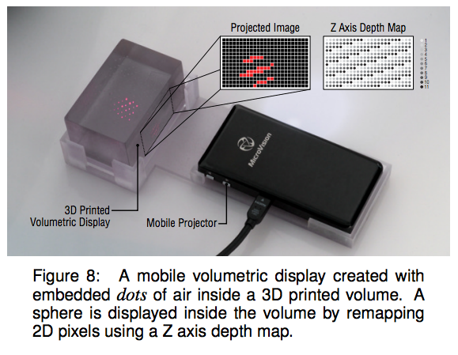
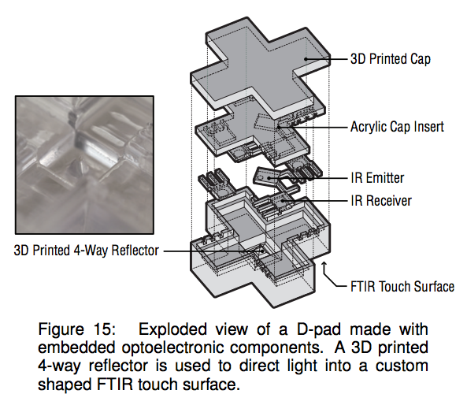
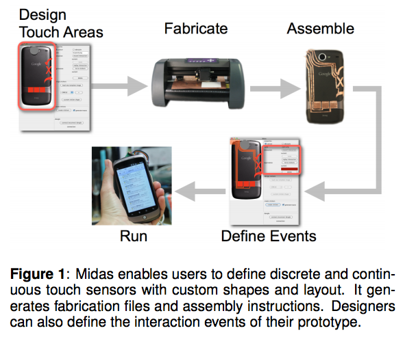
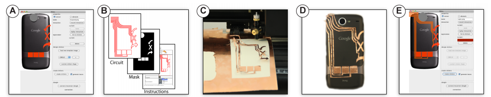
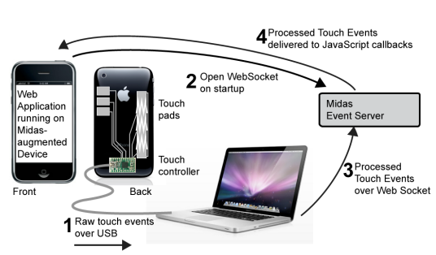
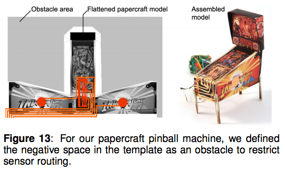

class: middle, center # Prototyping Jane Kim // Mobile HCI --- class: middle ### High-fidelity prototyping - aka hi-fi prototyping - relatively low cost - fast - accessible ??? low cost methods fast means user studies can be done in a short timeline both enable accessibility to non-programmers / non-hardware hackers --- class: center, middle # Printed Optics --- class: center, middle ## Printed Optics: Video <iframe width="560" height="315" src="//www.youtube.com/embed/eTeXTbXA6-Y" frameborder="0" allowfullscreen></iframe> --- ## About <img src="img/authors.png" width="100%"> - UIST '12 - Willis - Principal Research Engineer @ Autodesk Consumer Group - Brockmeyer - Designer & Lab Associate @ Disney Research - Hudson - HCI Professor @ CMU ??? Autodesk, Inc. is an American multinational software corporation that makes software for the architecture, engineering, construction, manufacturing, media, and entertainment industries --- ### Introduction & Contributions 3D printed elements embedded in interactive devices used to - techniques for displaying information - sensing user input --- ## Fabrication - digital geometry -> physical form - photopolymer-based process - availability of range of photopolymer materials - Objet Eden260V - manual finishing process ??? Objet 600dpi, allows visibly smooth models without internal gaps manual finishing process --- ## Capabilities - multiple materials - structures within structures - combined mechanical-optical design --- class: center, middle ## Light Pipes <img src="img/pipes.png"> ??? guides light from point to point highly customizable thanks to 3d printing software by changing software paramters --- class: center, middle ## Internal Illumination  --- class: center, middle ### Sensing Mechanical Movement <img src="img/mechanical.png"> --- class: center, middle ## Embedded Components  --- ## Limitations - limited light transmission - level of clarity - hollow areas --- class: center, middle # Midas --- class: center, middle ## Midas: Video <iframe width="560" height="315" src="//www.youtube.com/embed/WHcQgtjD_zY" frameborder="0" allowfullscreen></iframe> --- ## About <img src="img/authors2.png" width="100%"> - UIST '12 - Savage and Hartmann - Berkeley Institute of Design --- ### Current limitations - current toolkits constrain exploration - gulf of execution --- ### Introduction & Contributions - custom capacitative touch sensors - physical sensing interfaces easy as GUI <img src="img/gui.png"> ??? based on success of GUI editors buttons, 1D sliders, 2D pad sensors --- ## Related work - exisiting toolkits (physical) - direct touch sensing (BOXES) - design tools ??? high level abstraction -> accessibility --- class: center, middle ## Pipeline  --- ## Midas workflow  1. sensor editor 2. fabrication files and instructions 3. cutting machine 4. attachment 5. interactivity ??? 1. modeled on gui editor 2. svgs 3. vinyl cutters instead of laser printers, inexpensive materials; --- ## Touch sensing - record-and-replay - WebSockets - debugging support  --- ## Limitations - physical constraints - limited capacity of touch sensing chips - no multi-touch (yet) - reduced mobility of prototypes - no direct screen input - 2D models only --- ## Applications wide range of applications because of accessibility  --- ## Evaluation - 3 experienced users - design a media player interface --- ## Results - ease of construction - instructions not detailed enough -> added animations - unsuccessful routing -> included tips --- ## Future work - conductive ink printing - tether-less prototype - other modes of input --- # Overall... - Rise of 3D printing - ease of prototyping --- # Discussion Both papers are from UIST '12. - Which do you think was more popular? - Which will have wider reach in research? In consumer products? - What other flaws are there in the research? ??? optics is more polished, from Disney think about target audience optics no evaluation, midas minimal evaluation with trained subjects